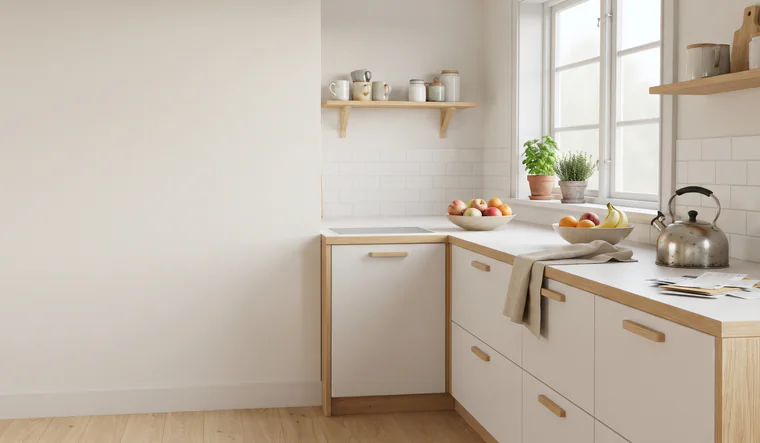
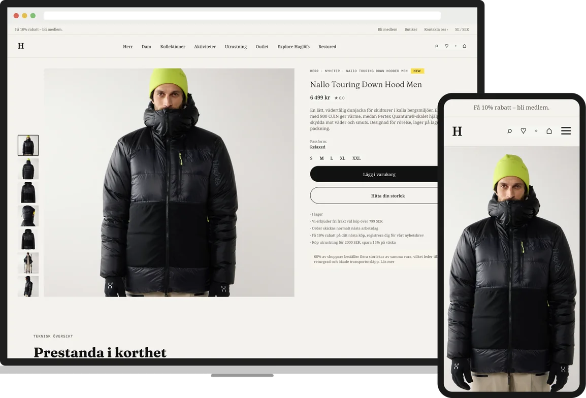
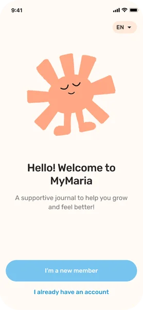
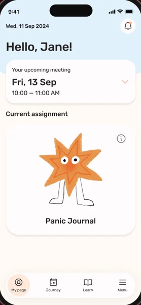
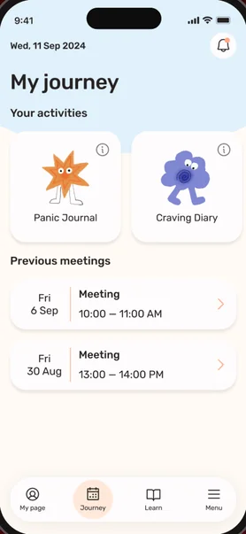
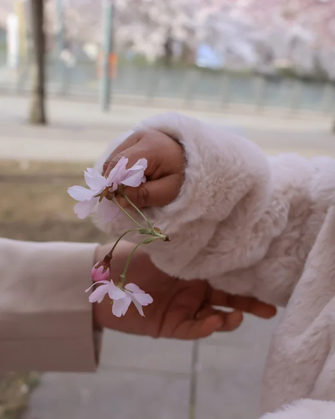

Brand & content
Homer
A new brand concept and social content for a home management app.
Self-initiated · Solo · 2026
I’m a digital designer.
UX/UI · Visual design · Content
I make complex products feel simple, and I create the content that helps people understand them. Six years in law taught me where people get lost. Research tells me how to guide them.

Brand & content
A new brand concept and social content for a home management app.
Self-initiated · Solo · 2026

UX/UI & content
A product page that makes technical outdoor gear easy to shop.
Client project · UX/UI & research · 2026



UX design
A calm treatment companion app for young people at Maria Ungdom.
Client project · UX designer · Team of 4
First legal language, turned into agreements people could understand. Then three novels, from English to Persian. Now complex products, turned into clear screens and content. And off-screen, people’s stories, through my camera.
More about me